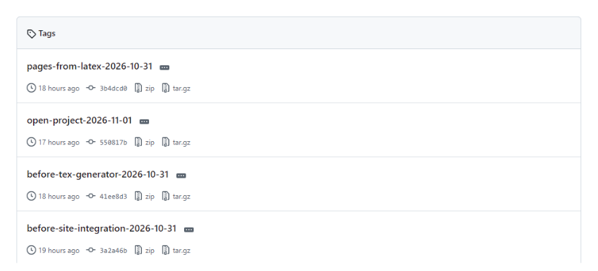
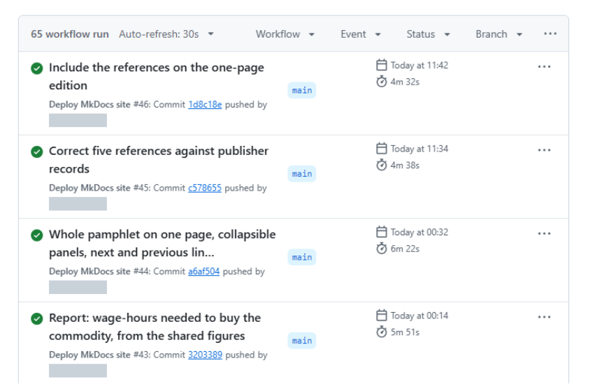
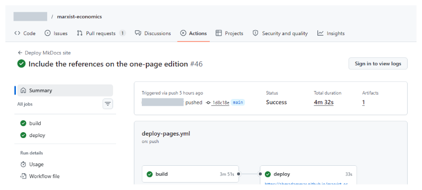

1. Git basics¶
1.1 The idea¶
The blocks labelled "What you should see" in this guide come from running these commands in a test folder. Your commit codes, dates and folder names will differ, ... marks a shortened folder path, and very long output is trimmed.
Git is a program that records versions of a folder. Each saved version, called a commit, stores what changed, who changed it, when and why. Nothing committed is lost, so you never need files such as final_v2_really_final.docx.
Install it from git-scm.com, then tell it who you are, once:
git config --global user.name "Your Name"
git config --global user.email "you@example.org"
1.2 The everyday cycle¶
git init -b main # start tracking this folder, once, on a branch called main
git status # what has changed?
git diff # show the changes, line by line
git add results.txt # choose what goes in the next version
git commit -m "Correct the mean" # save that version, with a reason
git log --oneline # list the versions
What you should see
$ git init -b main
Initialized empty Git repository in .../project/.git/
$ git status
On branch main
No commits yet
Untracked files:
(use "git add <file>..." to include in what will be committed)
notes.txt
results.txt
nothing added to commit but untracked files present (use "git add" to track)
$ git add results.txt
$ git commit -m "First results"
[main (root-commit) 4f2d1b0] First results
1 file changed, 1 insertion(+)
create mode 100644 results.txt
Now change the number in results.txt and look again. In git status --short, M means modified and ?? means not tracked. In git diff, a line starting - was removed and a line starting + was added.
What you should see
$ git status --short
M results.txt
?? notes.txt
$ git diff
diff --git a/results.txt b/results.txt
index 62b900e..de5c1f9 100644
--- a/results.txt
+++ b/results.txt
@@ -1 +1 @@
-The mean is 10.
+The mean is 12.
$ git add results.txt
$ git commit -m "Correct the mean"
[main 2f4cdbe] Correct the mean
1 file changed, 1 insertion(+), 1 deletion(-)
$ git log --oneline
2f4cdbe Correct the mean
4f2d1b0 First results
Without -b main, this version of Git names the first branch master and prints a long hint about it. The rest of this guide uses main.
The add step exists so that one commit can hold one logical change, even if you changed other files too.
1.3 Try it safely¶
This script makes a new folder and goes through the whole cycle. Read it, then run it.
practice.sh
#!/bin/bash
# A safe practice run of everyday Git, in a new folder. Run: bash practice.sh
set -e
mkdir git-practice && cd git-practice
git init -q -b main
git config user.name "A Student"
git config user.email "student@example.org"
# Save a first version
echo "The mean is 10." > results.txt
git add results.txt
git commit -q -m "First results"
# Change it and see exactly what changed
echo "The mean is 12." > results.txt
git diff --stat
git add results.txt
git commit -q -m "Correct the mean"
# Name this version
git tag -a sent-to-supervisor -m "The version I sent"
# Try an idea safely on a branch, then bring it back
git switch -q -c idea
echo "The median is 11." >> results.txt
git add results.txt
git commit -q -m "Add the median"
git switch -q main
git merge -q idea
# Undo the last change, keeping the history
git revert --no-edit HEAD
git log --oneline
cat results.txt
What you should see
results.txt | 2 +-
1 file changed, 1 insertion(+), 1 deletion(-)
[main ab8a9f9] Revert "Add the median"
Date: Sun Nov 1 16:26:34 2026 +0000
1 file changed, 1 deletion(-)
ab8a9f9 Revert "Add the median"
bd9ec39 Add the median
6f32cdc Correct the mean
8c59d4e First results
The mean is 12.
The last line matters: the median has gone from the file, yet all four versions are still in the history.
1.4 What to track¶
Track what you write by hand: text, code and small inputs. Don't track what can be regenerated, large data, or anything secret. A file called .gitignore lists what to skip:
__pycache__/
*.log
build/
data/raw/
.env
With that file in place, and run.log, .env and build/a.pdf in the folder, Git no longer mentions them:
What you should see
$ git status --short
?? .gitignore
?? notes.txt
1.5 Good commit messages¶
Write what changed and why, briefly, such as Correct the living-wage year. Commit often, in small steps, so that each can be understood or undone by itself.
2. Branches, tags and going back¶
2.1 Branches¶
A branch is a separate line of work, which lets you try something without touching your working version.
git switch -c idea # make a branch and move to it
### ... work and commit ...
git switch main # go back
git merge idea # bring the work in
What you should see
$ git switch -c idea
Switched to a new branch 'idea'
$ git commit -m "Add the median"
[idea 9b0de38] Add the median
1 file changed, 1 insertion(+)
$ git switch main
Switched to branch 'main'
$ git merge idea
Updating 3545826..9b0de38
Fast-forward
results.txt | 1 +
1 file changed, 1 insertion(+)
If two branches changed the same lines, Git asks you to choose. Open the file, keep what you want, delete the markers, then git add and git commit.
Here is a real conflict, where one branch set the mean to 13 and main set it to 14. The file then holds both versions between markers:
What you should see
$ git merge left
Auto-merging results.txt
CONFLICT (content): Merge conflict in results.txt
Automatic merge failed; fix conflicts and then commit the result.
$ cat results.txt
<<<<<<< HEAD
The mean is 14.
=======
The mean is 13.
>>>>>>> left
The median is 11.
2.2 Tags¶
A tag gives a version a permanent name, such as what you sent to a journal.
git tag -a submitted-2026-11-01 -m "Sent to the journal"
git push origin submitted-2026-11-01
What you should see
$ git tag
submitted-2026-11-01
$ git show --no-patch submitted-2026-11-01
tag submitted-2026-11-01
Tagger: Your Name <you@example.org>
Date: Sun Nov 1 16:26:36 2026 +0000
Sent to the journal
commit 9b0de3816b57169335da0ad020b08419b9cec876
Author: Your Name <you@example.org>
Date: Sun Nov 1 16:26:35 2026 +0000
Add the median
Once pushed, tags are listed on the project's page on GitHub, each with its commit and a download of the files at that point. These are the tags of my pamphlet project:

\The tags of a public repository on GitHub.
2.3 Going back¶
You want to |
Use |
|---|---|
See an old version |
|
Undo a commit, keeping the history |
|
Get one old file back |
|
Discard edits you haven't committed |
|
Find which commit broke something |
|
What you should see: looking at an old version
$ git switch --detach submitted-2026-11-01
HEAD is now at 9b0de38 Add the median
$ cat results.txt
The mean is 12.
The median is 11.
$ git switch main
Previous HEAD position was 9b0de38 Add the median
Switched to branch 'main'
Prefer revert over rewriting history. Commands such as git reset --hard and git push --force can destroy work, so check what they do before using them.
2.4 A sensible rule for versions¶
Keep one working copy of each file under Git, and stop putting versions in file names. For data, which is too large for Git, use dated read-only folders with recorded checksums, as described in the backups chapter.
3. GitHub and working with others¶
3.1 Remotes¶
GitHub keeps a copy of your repository online.
git remote add origin https://github.com/you/project.git
git push -u origin main # send your commits
git pull # fetch others' commits
git clone <address> # copy a project to your computer
This run pushed to a test copy on the same computer rather than to GitHub, so its address is shortened. A push to GitHub also shows progress lines, and asks you to sign in the first time.
What you should see
$ git push -u origin main
To .../empty.git
* [new branch] main -> main
branch 'main' set up to track 'origin/main'.
$ git remote -v
origin .../empty.git (fetch)
origin .../empty.git (push)
$ git pull
From .../empty
b889be1..4912949 main -> origin/main
Updating b889be1..4912949
Fast-forward
results.txt | 1 +
1 file changed, 1 insertion(+)
After a real push, your project's page on GitHub shows the files, with the latest commit message beside each one. This is my pamphlet project's page, with the account name and picture hidden:
 \
\
A repository page on GitHub, with the account name and picture hidden.
Before making anything public, check it for secrets and for unpublished work. Git keeps history, so deleting a file later doesn't remove it from past commits.
3.2 Issues and pull requests¶
-
An issue is a note about something to fix or discuss.
-
A pull request proposes a change: someone works on a branch, then asks for it to be merged. Others can review it line by line, and automatic checks run on it.
3.3 Making a project welcoming¶
File |
Purpose |
|---|---|
|
What this is, and how to use it |
|
What others may do with it. Without one, they have no clear right to reuse it |
|
How to help |
|
How to cite it |
|
Forms that ask for the right details |
Remember people who don't use GitHub, and offer them a simple way to reach you. The pamphlet's help page is one example.
3.4 Sites and releases¶
GitHub Pages publishes a website from a repository for free. A GitHub Release attaches files to a tag, while Zenodo can archive a release and give it a citable DOI.
4. Testing research code¶
4.1 Why test¶
A script that runs without errors can still be wrong. A test runs your code and checks the answer against something you know.
calc.py
"""A tiny calculation to test."""
def heat_loss(u, area, delta_t):
"""Heat loss in watts: Q = U A dT."""
if u < 0 or area < 0:
raise ValueError("U-value and area cannot be negative")
return u * area * delta_t
test_calc.py
"""Tests check the code against answers worked out by hand. Run: python -m pytest"""
import pytest
from calc import heat_loss
def test_known_answer():
assert heat_loss(2.1, 10, 15) == pytest.approx(315)
def test_no_temperature_difference_means_no_loss():
assert heat_loss(2.1, 10, 0) == 0
def test_impossible_input_is_refused():
with pytest.raises(ValueError):
heat_loss(-1, 10, 15)
pip install pytest
python -m pytest
What you should see
$ python -m pytest
============================= test session starts =============================
platform win32 -- Python 3.12.12, pytest-9.2.0, pluggy-1.7.0
rootdir: ...\py
plugins: platformdirs-4.14.2
collected 3 items
test_calc.py ... [100%]
============================== 3 passed in 0.09s ==============================
Each dot is a passing test. To see a failure, I changed u * area * delta_t to u * area + delta_t in calc.py, as if by a slip of the finger. The code still runs without any error, but the tests catch it:
What you should see when a test fails (first lines trimmed)
test_calc.py FF. [100%]
================================== FAILURES ===================================
______________________________ test_known_answer ______________________________
def test_known_answer():
> assert heat_loss(2.1, 10, 15) == pytest.approx(315)
E assert 36.0 == 315 ± 3.1e-04
E
E comparison failed
E Obtained: 36.0
E Expected: 315 ± 3.1e-04
test_calc.py:8: AssertionError
________________ test_no_temperature_difference_means_no_loss _________________
def test_no_temperature_difference_means_no_loss():
> assert heat_loss(2.1, 10, 0) == 0
E assert 21.0 == 0
E + where 21.0 = heat_loss(2.1, 10, 0)
test_calc.py:12: AssertionError
=========================== short test summary info ===========================
FAILED test_calc.py::test_known_answer - assert 36.0 == 315 ± 3.1e-04
FAILED test_calc.py::test_no_temperature_difference_means_no_loss - assert 21...
========================= 2 failed, 1 passed in 0.33s =========================
4.2 Kinds of test for research¶
Test |
Question |
Example |
|---|---|---|
Known answer |
Does it match a hand calculation? |
x 10 x 15 = 315 |
Limit case |
Does it behave at the extremes? |
No temperature gap gives no heat loss |
Invariant |
Does a rule always hold? |
Total price equals total value |
Simulated data |
Can it recover a truth you planted? |
A model finds a jump you added |
Data check |
Is the data as expected? |
No duplicates, values in range |
Independent recalculation |
Do two separate methods agree? |
The same estimate from different code |
Rendered output |
Does the result look right to readers? |
A browser opens each page |
4.3 Lessons from real faults¶
These all happened in my own projects:
-
An independent recalculation confirmed an estimate exactly, and adding a check for correlated data showed its confidence interval was too narrow.
-
A check of stated numbers against results found a sample size typed wrongly into a paper.
-
A test for labels found age groups named for the wrong years, though the numbers ran fine.
-
A browser test found broken links, unreadable buttons and maths that displayed as raw code. Its first version missed some faults, because it looked for error messages and these made none.
So a passing test only shows that the things you tested held. When a fault gets through, add a test for that kind of fault.
4.4 What tests cannot do¶
They can't show that a method is valid, or an argument sound. That takes reasoning and readers.
5. Continuous integration¶
5.1 What the terms mean¶
-
Continuous integration (CI) runs your checks automatically on every change, on a clean machine.
-
Continuous delivery or deployment (CD) then publishes the result, but only if the checks pass.
A clean machine catches the classic fault of a project that only works on your own computer.
5.2 A first workflow¶
Save this in your repository as .github/workflows/tests.yml:
tests.yml
# Save as .github/workflows/tests.yml in a GitHub repository.
name: tests
on: [push, pull_request]
jobs:
test:
runs-on: ubuntu-latest
steps:
- uses: actions/checkout@v4
- uses: actions/setup-python@v5
with:
python-version: "3.12"
- run: pip install pytest
- run: python -m pytest
Reading it line by line:
-
onsays when to run: on each push and pull request. -
runs-onpicks a fresh virtual machine. -
stepsrun in order.usesruns a ready-made action, andrunruns a command. -
If any step fails, the run fails, and GitHub shows a red cross.
See the results under the repository's Actions tab. Read the failing step's log from the bottom up, and find the first real error.
These are the Actions tab and one run from my pamphlet project, with the account name hidden. A green tick means every step passed.

\The Actions tab lists each run with its outcome and how long it took.

\One run: the deploy job starts only after the build job passes.
5.3 From testing to publishing¶
A publishing workflow adds a job that only runs after the checks succeed. This is how my pamphlet's workflow works:
-
Install Pandoc, LaTeX and a browser.
-
Run the equation tests.
-
Rebuild every page and PDF from source.
-
Check links and numbers.
-
Open every page in a browser, and test what readers see.
-
Publish, only if all of that passed. Otherwise, the old site stays up.
5.4 Practical advice¶
-
Pin versions of tools that affect output, such as
python-version: "3.12". -
Keep secrets out of files. Store them in the repository's settings as encrypted secrets.
-
Keep private work private. A public workflow's logs are public.
-
Watch the time. Slow checks get ignored, so run the quickest first.
5.5 Hooks: checks before you push¶
A Git hook runs a script at a moment such as a commit. A file at .git/hooks/pre-commit can block a commit containing a secret or broken code, and a pre-push hook does the same before sending work online. Hooks aren't copied with a repository, so each person must install them. For a shared setup, look at the pre-commit tool.
5.6 Scheduled checks¶
CI can also run on a timetable, and on your own computer, Windows Task Scheduler or cron can run a daily health report that emails you when something changes. Keep alerts rare, because people stop reading frequent ones.
6. Reproducible pipelines¶
6.1 The idea¶
If you copy a number from your analysis into a paper by hand, sooner or later they will differ. So store each thing once, and generate the rest.
data/figures.json ---> analysis code ---> numbers.tex ---> paper.pdf
\--> tables and figures
\-> web pages and slides
6.2 Rules that prevent most errors¶
-
Raw data is read-only. Scripts read it and write elsewhere.
-
Numbers in text are generated. A script writes them as LaTeX commands, for example.
-
Equations live in one tested function. Everything calls it.
-
One command rebuilds everything. It might be
python build_all.pyormake. -
Each output records its source, such as a commit or a checksum.
-
Generated files say so, in a comment at the top, so that nobody edits them by hand.
-
Paths are relative.
C:\Users\me\dataworks only for you. -
Random steps have a fixed seed, so that results repeat exactly.
-
The environment is recorded, in a
requirements.txt,environment.ymlor container.
6.3 A worked example¶
My pamphlet project has one LaTeX source and one data file. One command builds the website, the PDF, a report, slides and a calculator from them, then checks that they all agree.
When I switched the pamphlet to shared numbers, a check confirmed that the PDF's text hadn't changed at all. That kind of proof is what makes a large change safe.
6.4 Tools for larger projects¶
| Tool | Good for |
|---|---|
make, Snakemake, Nextflow |
Rebuilding only what changed |
Conda, venv, uv |
Python environments |
| Docker, Apptainer | Whole environments, including on HPC |
| DVC, DataLad, Git LFS | Versioning large data |
Start simple. A short script that runs each step in order goes a long way.
7. Data, backups and releases¶
7.1 Data¶
Git isn't built for large files, so keep data out of it, and record what you used.
-
Never overwrite. Write each new run to a dated folder, such as
results_2026-10-31/. -
Record checksums, which are fingerprints that change if a file changes:
sha256sum *.csv > MANIFEST.sha256, and check later withsha256sum -c MANIFEST.sha256. -
Note the source of each dataset: its address, date and licence.
What you should see when nothing has changed
$ sha256sum -c MANIFEST.sha256
a.csv: OK
b.csv: OK
What you should see after someone edits b.csv
$ sha256sum -c MANIFEST.sha256
a.csv: OK
b.csv: FAILED
sha256sum: WARNING: 1 computed checksum did NOT match
7.2 Backups¶
Git is not a backup until a copy exists elsewhere, and a private repository on one laptop can be lost with that laptop. The common rule is 3-2-1: three copies, on two kinds of storage, with one somewhere else.
Syncing services such as OneDrive aren't enough on their own, because they also sync deletions and corruption. And a backup you've never restored is only a hope, so test one:
git bundle create project.bundle --all # one file holding a repository's whole history
git clone project.bundle restore-test # prove that it comes back
git bundle create prints nothing when it runs inside a script, as here, and shows progress when you type it yourself. Then read the restored history to check it:
What you should see
$ git clone project.bundle restore-test
Cloning into 'restore-test'...
$ git -C restore-test log --oneline -3
4912949 Colleague edit
b889be1 Merge left, keeping 14
a0a50db Main change
Databases and uploaded files don't live in Git, so they need their own backups, including an encrypted copy off-site.
7.3 Releases¶
Whenever something leaves your hands, freeze a copy.
-
Commit everything, so that the source is exact.
-
Run all the checks.
-
Build from clean.
-
Put the outputs in a dated, read-only folder, with checksums.
-
Tag the commit.
Then, for anything a reader sends back, you can find precisely what they had. If it needs correcting, make a new release and log the reason, without editing the old one.
7.4 Secrets¶
Passwords and keys never go in a repository, because history keeps them even after deletion. Use environment variables or a secrets store. If one gets committed, treat it as exposed: change it first, then clean up.
8. Checklists and cheat sheet¶
8.1 Starting a project¶
-
git init, a README and a.gitignore -
A folder layout that separates raw data, code and outputs
-
A recorded environment
-
A first test
-
A remote copy and a backup
-
A licence, if it's going public
8.2 Before sending anything out¶
-
All changes committed
-
Tests and checks pass
-
Built from clean, on the current source
-
Every stated number traced to a result
-
Links and references tested
-
Read by a person against its sources
-
Frozen as a dated release, with a tag and checksums
-
Backed up
8.3 Cheat sheet¶
git status # what changed?
git diff # how?
git add -A # choose everything
git commit -m "Why" # save a version
git log --oneline # list versions
git switch -c idea # new branch
git merge idea # bring it in
git tag -a v1 -m "Note" # name a version
git push # send online
git pull # fetch from online
git revert <commit> # undo, keeping history
python -m pytest # run tests
sha256sum -c MANIFEST.sha256 # check files are unchanged
8.4 References and further reading¶
Ammar, A. (n.d.) Marxian political economy: project source. https://github.com/AhmadAmmar/marxist-economics
Ammar, A. (n.d.) How the pamphlet is built. https://ahmadammar.github.io/marxist-economics/how-it-works/
Ammar, A. (n.d.) How to contribute. https://ahmadammar.github.io/marxist-economics/contribute/
Git (n.d.) Git. https://git-scm.com
pre-commit (n.d.) pre-commit. https://pre-commit.com
Zenodo (n.d.) Zenodo. https://zenodo.org